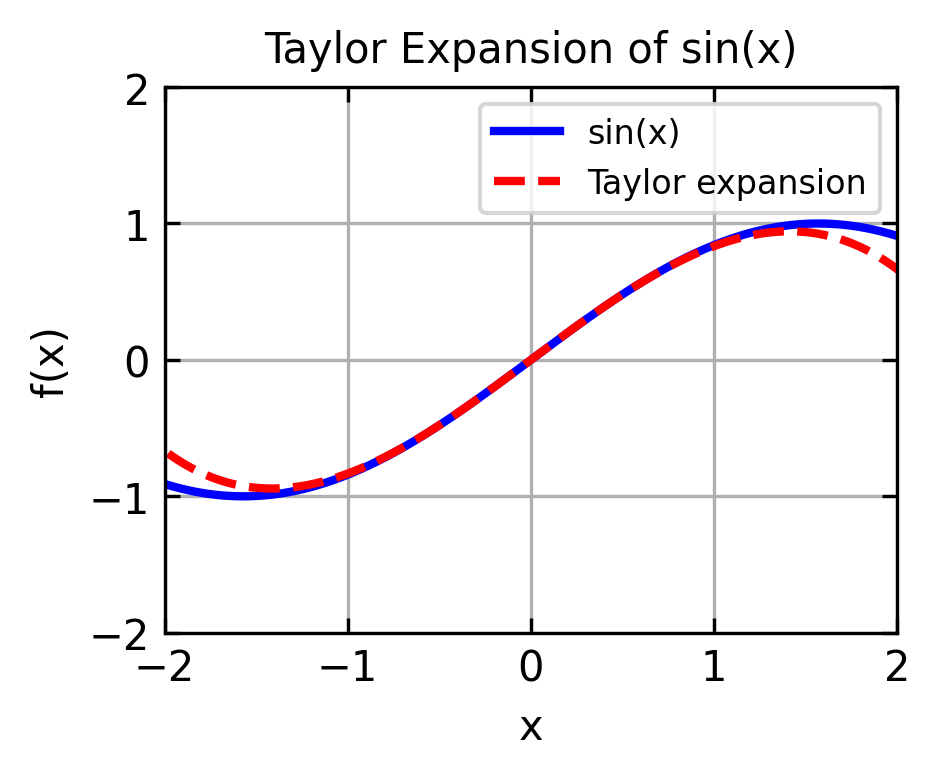

Step-by-Step Development of a Molecular Dynamics Simulation
Author
Frank Cichos
Molecular Dynamics Simulations
Real molecular dynamics (MD) simulations are complex and computationally expensive but very cool, as they give you a glimpse into the world of atoms and molecules. Here, we will develop a simple MD simulation from scratch in Python. The goal is to understand the basic concepts and algorithms behind MD simulations and get something running which can be extended later but also what we are proud of at the end of the course.
Before we can start with implementing a simulation, we need to understand the basic concepts and algorithms behind MD simulations. The following sections will guide you through the development of a simple MD simulation.
Basic Physical Concepts
Newton’s Equations of Motion
The motion of particles in a molecular dynamics simulation is governed by Newton’s equations of motion:
\[m_i \frac{d^2\vec{r}_i}{dt^2} = \vec{F}_i\]
where:
\(m_i\) is the mass of particle \(i\)
\(\vec{r}_i\) is the position of particle \(i\)
\(\vec{F}_i\) is the force acting on particle \(i\)
The force acting on a particle is the sum of all forces acting on it:
\[\vec{F}_i = \sum_{j \neq i} \vec{F}_{ij}\]
where \(\vec{F}_{ij}\) is the force acting on particle \(i\) due to particle \(j\).
Potential Energy Functions and Forces
The force \(\vec{F}_{ij}\) is usually derived from a potential energy function and may result from a variety of interactions, such as:
Bonded interactions
bond stretching
bond angle bending
torsional interactions
Non-bonded interactions
electrostatic interactions
van der Waals interactions
External forces
We will implement some of them but not all of them.
Lennard-Jones Potential
The most common potential energy function used in MD simulations is the Lennard-Jones potential. It is belonging to the class of non-bonded interactions. The force and the potential energy of the Lennard-Jones potential are given by:
\(\sigma\) is the distance at which the potential is zero
\(r\) is the distance between particles
The Lenard Jones potential is good for describing the interaction of non-bonded atoms in a molecular system e.g. in a gas or a liquid and is therefore well suited if we first want to simulate a gas or a liquid.
The figure above shows the Lenard-Jones potential as a function of the distance between particles. The potential energy is zero at the equilibrium distance \(r = \sigma\) and has a minimum at \(r = 2^{1/6}\sigma\). The potential energy is positive for \(r < \sigma\) and negative for \(r > \sigma\).
Values for atomic hydrogen
For atomic hydrogen (H), typical Lennard-Jones parameters are:
\(\sigma \approx 2.38\) Å = \(2.38 \times 10^{-10}\) meters
Later, if we manage to advance to some more complicated systems, we may want to introduce:
force in bonds between two atoms
force in bond angles between three atoms
force in dihedral angles between four atoms
But for now, we will stick to the Lennard-Jones potential.
Integrating Newtons Euqation of Motion
When we have the forces on a particle we have in principle its acceleration. To get the velocity and the position of the particle we need to integrate the equations of motion. There are several methods to do this, but we will start with the simplest one, the Euler method.
Euler Method
To obtain this one first needs to know about the Taylor expansion of a function in general. The Taylor expansion of a function \(f(x)\) around a point \(x_0\) is providing an approximation of the function in the vicinity of \(x_0\). It is given by:
where \(f'(x_0)\) is the first derivative of \(f(x)\) at \(x_0\), \(f''(x_0)\) is the second derivative of \(f(x)\) at \(x_0\), and so on. We can demonstrate that by expanding a sine function around \(x_0 = 0\):
x = np.linspace(-2*np.pi, 2*np.pi, 1000)y = np.sin(x)y_taylor = x -1/6*x**3plt.figure(figsize=get_size(8, 6),dpi=150)plt.plot(x, y, 'b-', label='sin(x)', linewidth=2)plt.plot(x, y_taylor, 'r--', label='Taylor expansion', linewidth=2)plt.grid(True)plt.xlabel('x')plt.ylabel('f(x)')plt.xlim(-2,2)plt.ylim(-2,2)plt.title('Taylor Expansion of sin(x)')plt.legend()plt.show()

The expansion is therefore a good approximation in a region close to \(x_0\).
Velocity Verlet Algorithm
The velocity Verlet algorithm is a second-order algorithm that is more accurate than the Euler method. It can be derived from the Taylor expansion of the position and velocity vectors
The higher order terms in the Taylor expansion are neglected, which results in an error of order \(\Delta t^3\). As compared to that the Euler method is obtained by neglecting the higher order terms in the Taylor expansion of the velocity vector:
where: - \(\mathbf{r}\) is the position vector - \(\mathbf{v}\) is the velocity vector - \(\mathbf{F}\) is the force vector - \(m\) is the mass - \(\Delta t\) is the timestep
Simple Integration Example: Free Fall
Let’s start and try to integrate the equation of motion for a particle in free fall with the help of the Velocity Verlet algorithm. The only force acting on the particle is gravity. The equation of motion is:
Newton’s equation of motion: \(\mathbf{F} = m\mathbf{a}\)
For gravity: \(\mathbf{F} = -mg\hat{\mathbf{y}}\)
Therefore: \(\ddot{y} = -g\)
The analytical solution is:
Position: \(y(t) = y_0 + v_0t - \frac{1}{2}gt^2\)
Velocity: \(v(t) = v_0 - gt\)
Code
# Parametersg =9.81# m/s^2dt =0.01# time stept_max =2.0# total simulation timesteps =int(t_max/dt)# Initial conditionsy0 =20.0# initial heightv0 =0.0# initial velocity# Arrays to store resultst = np.zeros(steps)y = np.zeros(steps)v = np.zeros(steps)a = np.zeros(steps)# Initial valuesy[0] = y0v[0] = v0a[0] =-g# Velocity Verlet integrationfor i inrange(1, steps): t[i] = i * dt y[i] = y[i-1] + v[i-1] * dt +0.5* a[i-1] * dt**2# update position a_new =-g # new acceleration (assuming constant gravity) v[i] = v[i-1] +0.5* (a[i-1] + a_new) * dt # update velocity a[i] = a_new # store new accelerationy_analytical = y0 + v0*t -0.5*g*t**2plt.figure(figsize=get_size(8, 6), dpi=150)plt.plot(t, y)plt.plot(t, y_analytical, 'r--')plt.xlabel('Time (s)')plt.ylabel('Height (m)')plt.title('Free Fall Motion')plt.grid(True)plt.show()